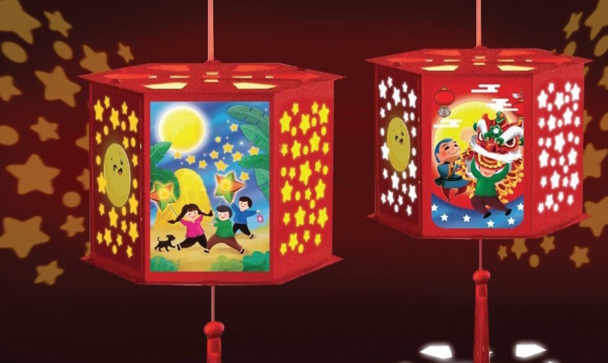

 Hình ảnh đèn Trung thu rất đa dạng và quen
thuộc, bao gồm đèn ông sao tượng trưng cho sự cân bằng, lồng đèn
cá chép biểu tượng cho sự kiên trì và may mắn, các mẫu đèn tròn, bầu dục như đèn hoa sen, đèn gà, thiên nga
làm từ tre và giấy kính. Bên cạnh đó còn có các mẫu đèn sáng tạo hơn như đèn hình đốm lửa
Các loại hình đèn Trung thu phổ biến:
Đèn ông sao: Là biểu tượng quen thuộc nhất, hình ngôi sao 5 cánh tượng trưng cho Ngũ hành, ước mong cuộc
sống hài hòa, đủ đầy.
Lồng đèn cá chép: Tượng trưng cho sự kiên trì, vượt khó, niềm hi vọng, sự may mắn và thành đạt.
Đèn hoa sen, đèn thiên nga, đèn con gà: Là các mẫu đèn truyền thống được làm từ tre và giấy kiếng màu,
có hình dáng bầu dục hoặc tròn, tượng trưng cho mặt trăng và vẻ đẹp thiên nhiên.
Đèn hình trụ: Có thể làm theo cách sáng tạo như cắt giấy bìa đen thành trụ, rồi dán các ngọn lửa giấy
màu lên để tạo thành đèn hình đốm lửa.
Ý nghĩa của đèn Trung thu:
Biểu tượng văn hóa: Đèn Trung thu là biểu tượng văn hóa Việt Nam, thể hiện tình yêu thương, sự đoàn kết.
Ước mong về cuộc sống tốt đẹp: Các hình dáng của đèn thường mang những ước vọng về cuộc sống hài hòa,
may mắn, thành công và đủ đầy.
Kết nối thế hệ: Qua những chiếc đèn, thế hệ trước truyền lại những nét đẹp truyền thống và tình yêu
thương cho thế hệ sau.